【神戸】 2015年世界人道デーイベント詳細
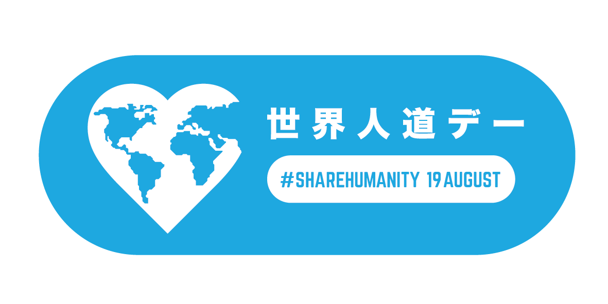8月20日に神戸市で開催された世界人道デー記念イベントでは、アフガニスタンからの留学生や、福島や海外で活躍するフォトジャーナリストなどのプレゼンが行われました。アフガン人として抱く平和への思い。ジャーナリストとして現場で直面する葛藤など、率直な言葉でそれぞれの思いを語り、今年のテーマ「ヒューマニティ：あなたを動かすチカラ」にふさわしい内容となりました。当日、会場に来られなかった方のために、その概要をご紹介します。
合わせて、今回のイベントのために協力してくれたアフガン人留学生2人のインタビューも掲載します。国の発展のために日本へ留学してきた思いや、日本社会の印象など、こちらもユニークな視点から語っていますので、ぜひご覧下さい。
自分の目で見て、自分のこととして考える 岩波友紀さん（フォトジャーナリスト）
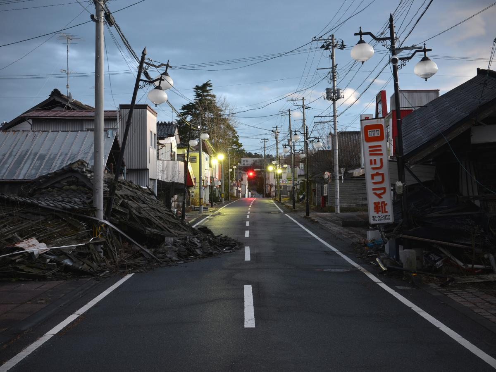福島県を拠点に、原発事故後の福島を撮り続けながら、2015年4月のネパール大地震など海外でも取材活動を行っています。世界人道デー記念イベントに合わせた企画展では、大地震発生直後にネパール入りして撮影した写真約30点を提供してくださり、大災害に見舞われながらも強く生きる人びとの姿を写しだしました。記念イベントの際にはスライドショーを行い、ネパール取材と共に、震災から4年以上が過ぎた福島の現在についても紹介。「現場では（人道支援のように物資などを届けるわけではなく）写真を撮っているだけ」なので、様々な葛藤もあるといいます。ネパールと福島で岩波さんが撮影した写真もあわせて紹介しています。全文と写真はこちら。
いつか母国が偏見の目で見られない日を ハサニ・エサヌラさん（留学生）
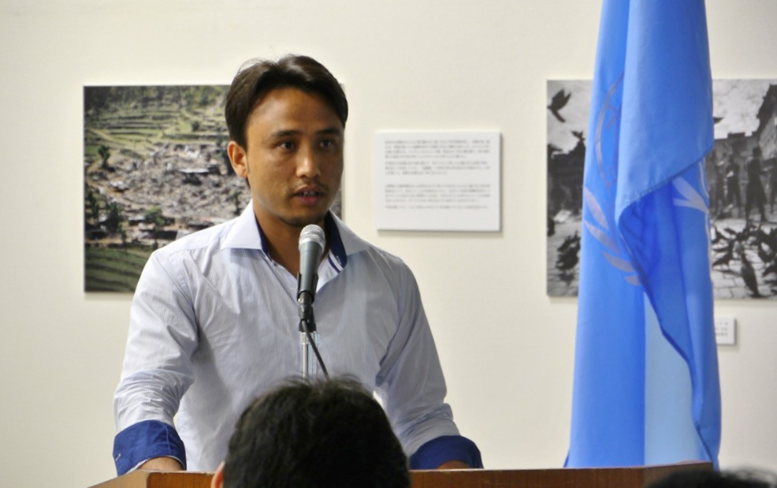母国・アフガニスタンで農村復興・開発省で国家公務員として勤務した後、日本政府による「アフガニスタン未来への架け橋・中核人材育成プロジェクト（PEACE）」の研修員として2014年来日し、神戸情報大学院大学でコンピューター・サイエンスを学んでいます。ハサニさん自身も、かつては難民として国を離れて暮らした経験があります。帰還後は、国の発展のために貢献すべく努力を続けています。豊かな歴史に育まれた多様な文化と、祖国に対する思いについて語ってくださいました。全文はこちら。
日本社会はイスラムの理想 ガラナイ・モハメド・ハニフさん（留学生）
日本という平和な国を大切にして エクバリ・サイード・ジアさん（留学生）
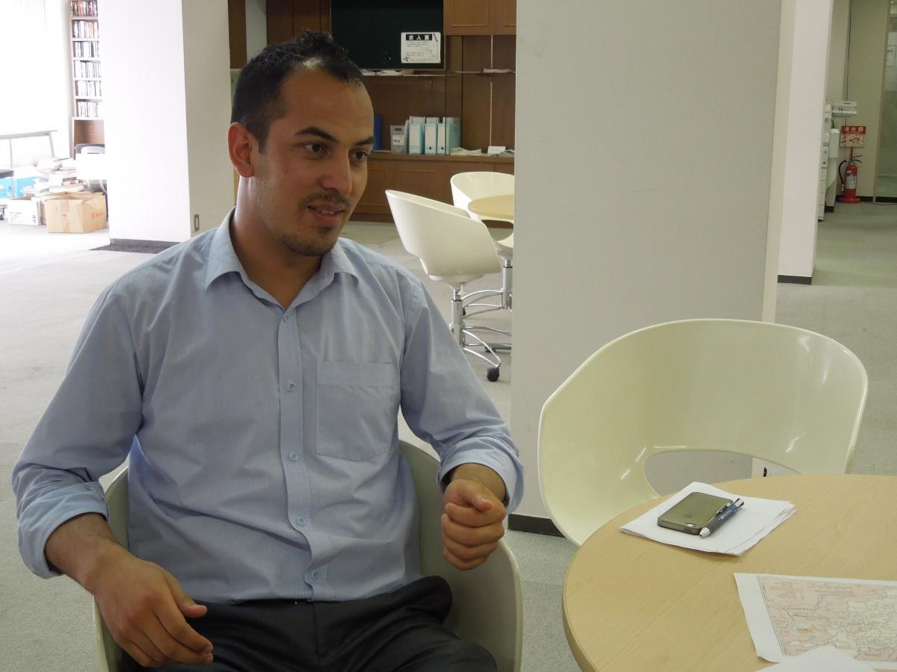OCHA神戸事務所のパートナーとして、世界人道デー記念イベントを共催した神戸情報大学院大学には、アフガニスタンのほか、ルワンダやモザンビークなどから来日した留学生が35名（2015年8月現在）在籍しており、「社会課題解決のためのICT（情報通信技術）」（ICT4D）を学んでいます。ICTを用いて、自分たちの国が抱える困難を解決する――容易ではないかもしれませんが、挑戦しがいのある目的のもと勉強しているのは、どんな方たちでしょうか。世界人道デー記念イベントに協力してくれたアフガン人学生2人のインタビューをご紹介します。
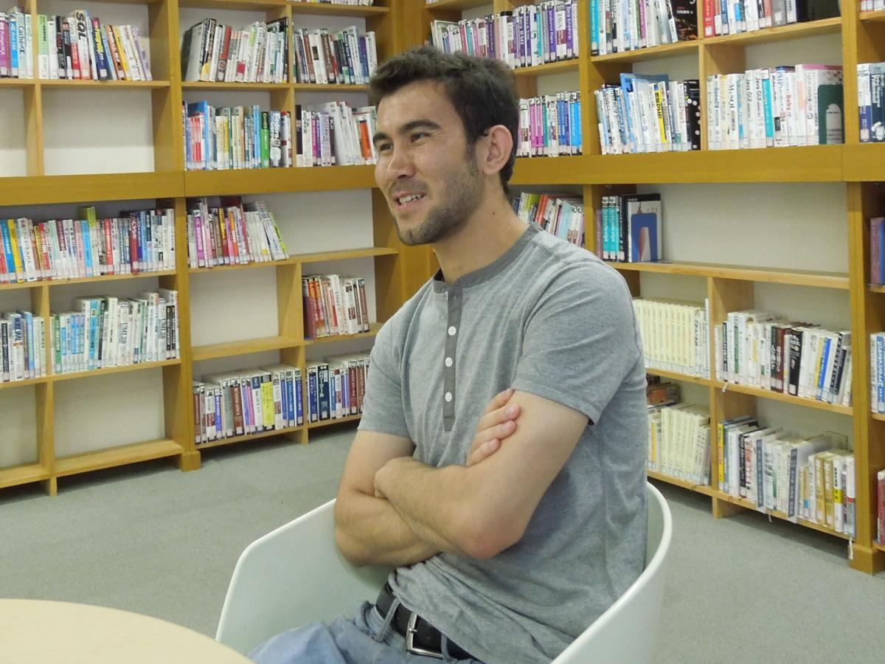インタビューに応じてくださったのは、ガラナイ・モハメド・ハニフさんとエクバリ・サイード・ジアさん。いずれもアフガニスタン人で、ガラナイさんはカブールの大学で、ジアさんは北部にあるバグラン州の大学でそれぞれ講師として勤務した後、日本政府による「アフガニスタン未来への架け橋・中核人材育成プロジェクト（PEACE）」の研修員として昨年来日し、神戸でコンピューター・サイエンスを学んでいます。現代の日本人にとって当然のように受け止められている「平和」は、アフガニスタンから来た彼らにとっては感銘を受けることが多いといい、日本の人たちには今の平和を大切にしてほしいといいます。詳しくはこちら。
自分の目で見て、自分のこととして考える 岩波友紀さん（フォトジャーナリスト）
（記述は2015年8月時点のものです）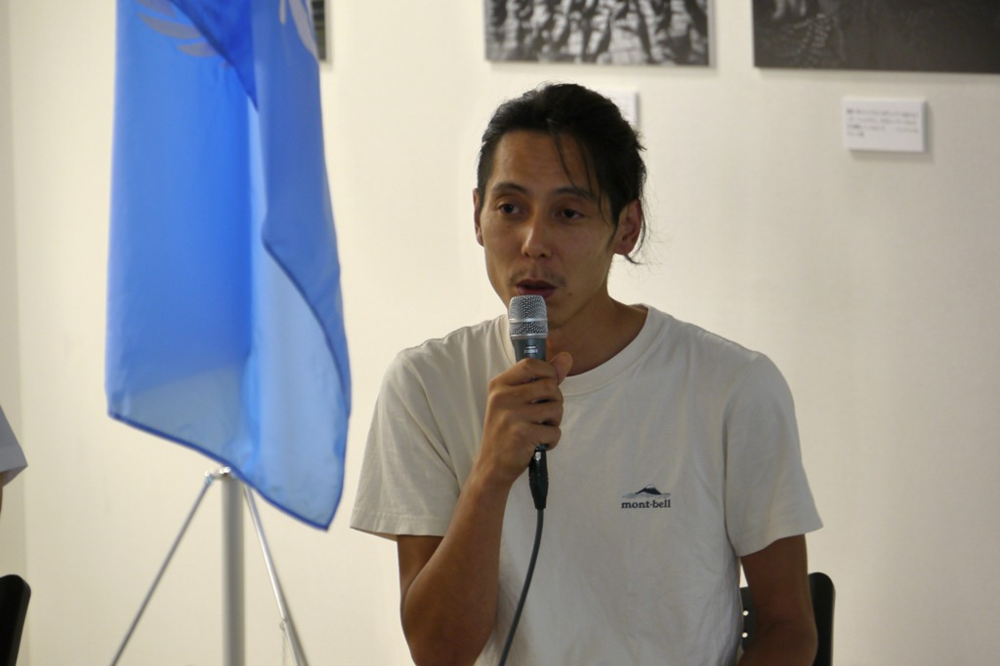
【ネパール編】
（ネパールでの取材中、とくに印象深かったエピソードについて）ある日、被災状況を撮影していたとき、日本の救助犬が来たんです。その際、サニスさんという方が母親が行方不明だということで、様子を見守っていました。その救助犬が指し示したところをネパール軍が掘っても、なかなか出てこなくて、夕暮れ間近に撤退ムードが漂い始めたときに、一人の兵士が『いたぞー！』と叫んだんです。掘り起こしたら、サニスさんのお母さんが見つかったんですが、既に亡くなられていました。
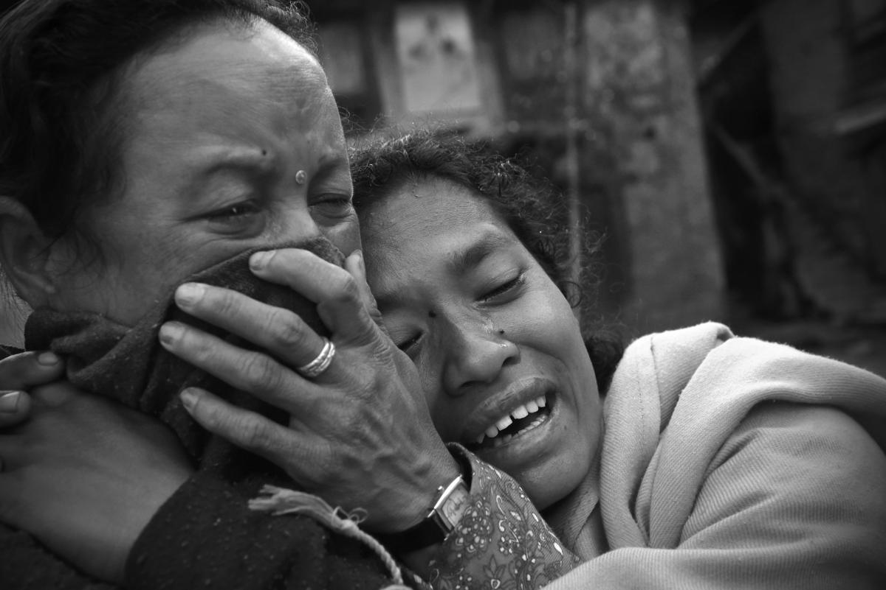【写真１】このあと、サニスさんら家族は担架でご遺体すぐに火葬場へと運んでいきました。サニスさんら姉妹はお母さんと対面して、泣き崩れました。女性は火葬に立ち会えないので、姉妹にとっては、この時が母親との最後の対面となりました。そのまま男性の家族たちで葬儀が執り行われ、ご遺体は荼毘に付されました。
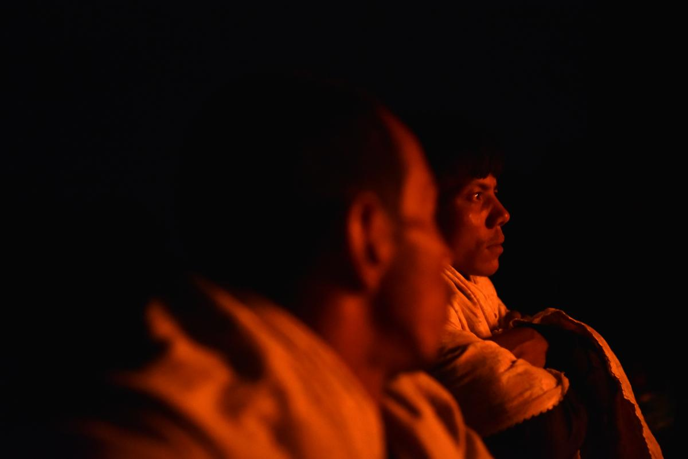
【写真２】サニスさんの父親や兄弟はじっと火葬の火を見つめていました。
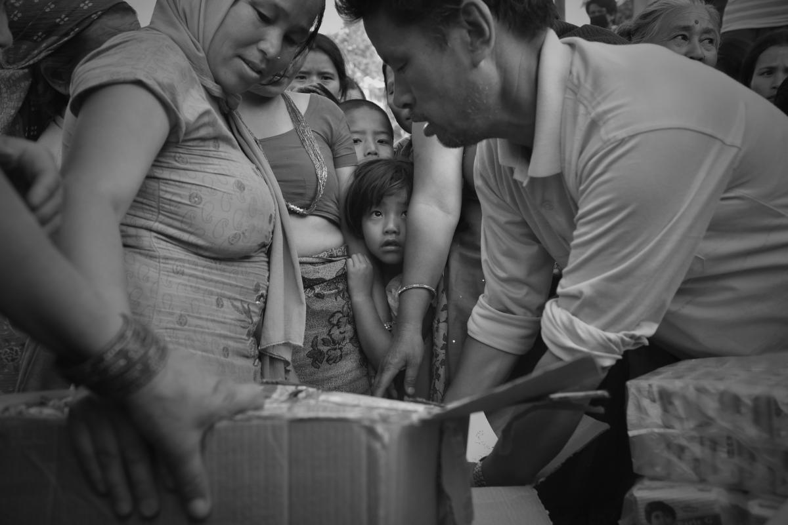
【写真３】支援物資の配給の様子です。みな押し合ったり奪い合ったりすることも無く、整然と並んで配給を受け取っていました。東日本大震災では秩序を保った被災者の姿が伝えられましたが、ネパールでも同じように皆が落ち着いていました。
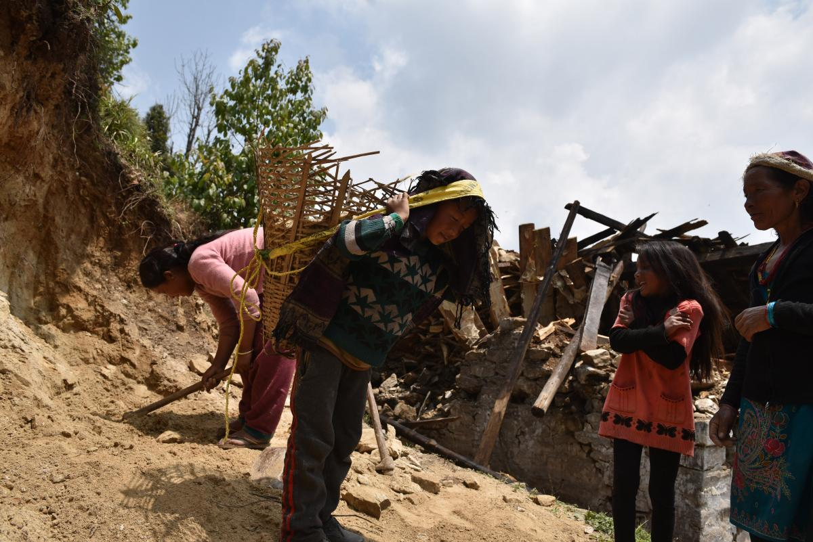
【写真４】現地で印象的だったのが、厳しい状況でも自分たちの力でやり直そうとしている姿ですね。地震発生からそれほど時間も経っていないのに、被災したある村では、自分たちで木を伐り出して既に仮の家を建て始めていました。この写真はその資材を子どもや女性たちが運んでいるところです。
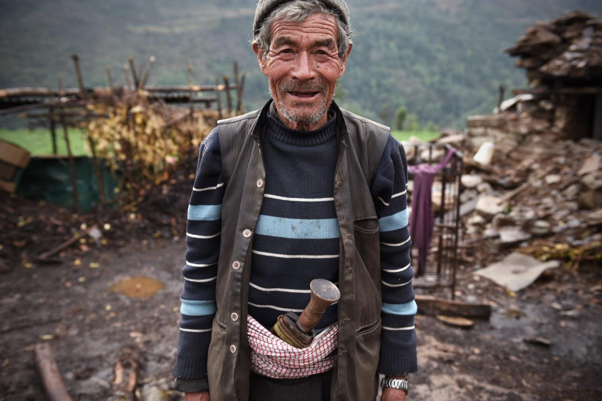【写真５】このおじいさんも、腰の鉈（なた）で木材を伐っていました。村の女性たちは、家は無くなったけれども畑仕事に勤しんでいました。田舎の人々は、もともと自給自足的な生活をしていたんですね。だから自分たちで何とかするということが身についているのだと思います。このような村人の様子に強さを感じました。
【福島編】
【写真６】これは、今年撮影した、双葉町の様子です。震災直後からずっと同じままです。
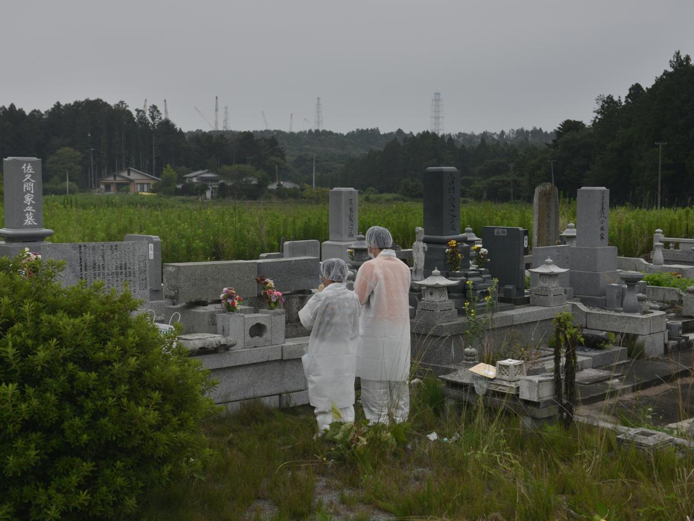 【写真７】これは許可無く立ち入りできない「帰還困難区域」に指定されている大熊町で撮った写真です。住民は年に15回だけ一時帰宅ができます。今もこのように防護服を着て、お墓参りをしています。
.jpg "写真7 (c) Yuki Iwanami") 【写真８】この場所は原発から4kmくらい離れた大熊町の立ち入り禁止の海岸付近です。この人たちはここで何をしているかというと、まだ見つかっていない家族を捜しているのです。私が出会った木村さんという男性は、行方不明となっている娘さんを捜索しています。先ほど申し上げたように、ここには年15回しか入れないので、その限られた時間の中で捜索するしかありません。それを仲間の方たちが手伝っています。その中の1人、上野さんという男性も同じ境遇で、父親と息子さんが未だ行方不明です。上野さんは助けてあげられなかった息子を、せめて自分の手で捜し出してやらなければいけないという思いがあり、彼は福興浜団というボランティア団体を組織して捜索活動を続けています。
【写真８】この場所は原発から4kmくらい離れた大熊町の立ち入り禁止の海岸付近です。この人たちはここで何をしているかというと、まだ見つかっていない家族を捜しているのです。私が出会った木村さんという男性は、行方不明となっている娘さんを捜索しています。先ほど申し上げたように、ここには年15回しか入れないので、その限られた時間の中で捜索するしかありません。それを仲間の方たちが手伝っています。その中の1人、上野さんという男性も同じ境遇で、父親と息子さんが未だ行方不明です。上野さんは助けてあげられなかった息子を、せめて自分の手で捜し出してやらなければいけないという思いがあり、彼は福興浜団というボランティア団体を組織して捜索活動を続けています。
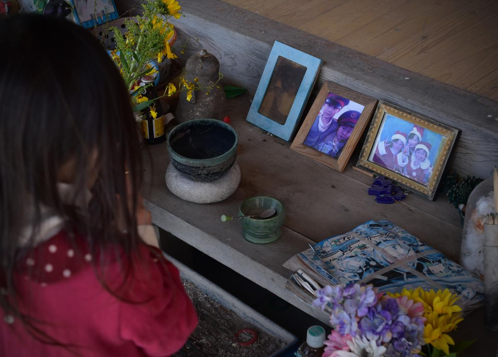
【写真９】上野さんは当時小学２年生だった長女も津波で亡くしました。震災後に生まれた次女が墓前に手を合わせています。今春、長女が卒業するはずの年でした。
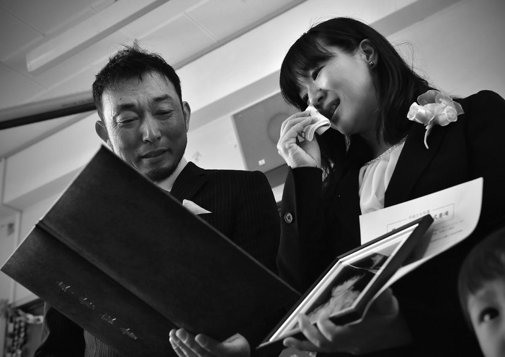【写真１０】学校では長女の代わりに上野さんご夫妻が卒業証書を受け取りました。上野さんはいつも笑顔で力強く生きていらっしゃいますが、この時はぼろぼろと涙を流していました。私もカメラマンとして、色々な悲しい場所で撮影してきましたが、初めてでした・・・撮影しながら泣いてしまったのは。撮影の時は絶対に泣いてはいけない、泣くんだったら撮影後に泣けばよくて、その術が身に付いていたのに。でも泣いてしまった。
【トーク編】
Q.11年勤めた新聞社を辞めて、フリーになった理由は？
A.新聞社はニュース、つまり新しい出来事を主に扱うので、新鮮味の無くなった話題をなかなか扱えなかったり、とことん過去の出来事を継続して写真取材するのが難しいという事情があります。それでフリーになりました。
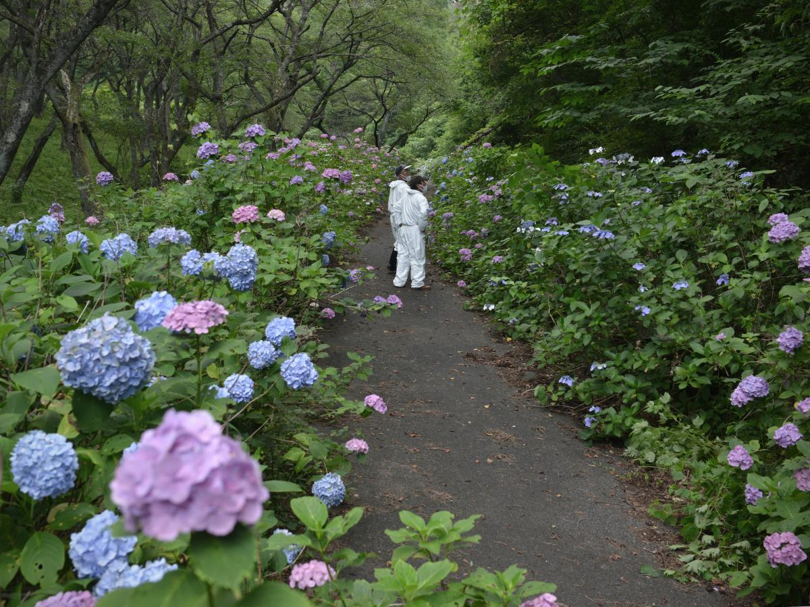Q.福島での活動をライフワークにしている理由は？
A.勤めていた新聞社での最後の赴任地が福島でした。それ以前には2005年から3年間、仙台に赴任して東北地方の取材を担当していました。その時に東北が好きになったというわけです。故郷ではないものの思い入れが自分の中でとても強く、東日本大震災、福島第一原発事故はものすごくショックな出来事でした。廃炉まで最低30年という時間的な長さに加え、原発事故の問題は根深い。これからもずっと取材していく価値があると思うので、一生のテーマ、自分のテーマとしてやっていきたいと考えています。
Q.フォトジャーナリストという仕事は悲惨な光景を前にしてシャッターを切り続けなければならない事もあるわけですが、撮影現場での心理的な葛藤を感じることは？
A.これが正しいとか、すごく役に立っているから撮影しているとは、自信を持って言えません。東日本大震災では捜索する自衛隊員、物資を届ける人、がれき撤去や炊き出しをするボランティアの中に混じって、ただ写真を撮っていただけです。その場で直接的にその人たちの役に立っているわけでもないですから。時として『こんな所で写真なんか撮ってんじゃねぇ！』と言われたりもするので、自分が本当に役に立っているのだろうか、むしろ邪魔しているのではないか、一体ここで何をしているのだろうか、と常に思い悩みながら撮影しています。それでも『遠いところからよく来たねぇ』『ここにいて話し相手になってくれるだけでいい』などと言われ、かえって現地の人に救われることもあります。もちろん、“伝える”“残す”ということが絶対に必要であるという思いに変わりはありません。
Q.岩波さんにとって“写真の力”とは？
A.写真は人を動かすことができるツールだと確信しています。そして、写真が人道支援に結びつくこともあります。人間は災害が自分の身に実際に降りかからないと、実感できないという傾向があります。自分から遠いところで発生した災害は、距離が遠ければ遠いほど、実感されにくいわけです。それを少しでも自分のことのように感じてもらうために、やはり“伝えること”は大事だと思います。私が写真に撮った誰々さんは、もしかしたら、明日の私かもしれないし、あなたかもしれないということを伝えたいのです。
（会場にいらっしゃった方々へのメッセージをお願いします）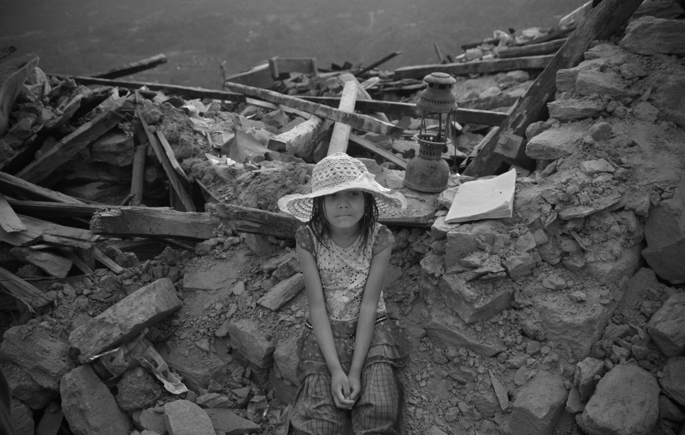
人道支援は、様々な形でできると思います。私は写真をやっているので、それを手段として間接的に支援に携わっていると考えています。国連職員として、医療のスペシャリストとして人道支援に携わることもできれば、上野さんの立ち上げた福興浜団のように普通の人がボランティアとして活動することもできます。ボランティアに行くべきだ、とか、被災地に義捐金を送るべきだ、とか言いたいわけではなく、伝えることを仕事としている私個人としては、国内で、そして世界各地で起こっていることを見て、自分のこととして考えて欲しいと思っています。もし、自分のこととして考えられれば、自分のやるべきことが自然と見えてくるし、その意識が社会を変えていく第一歩になるはずです。
*****
岩波さんの発行するThe PHOTO JOURNALも是非ご覧ください。
いつか母国が偏見の目で見られない日を ハサニ・エサヌラさん（留学生）
まず初めに、ヒューマニティのために戦っている全ての方々に敬意を表するとともに、人道支援に命を捧げることとなってしまった方々のご冥福をお祈り申し上げます。
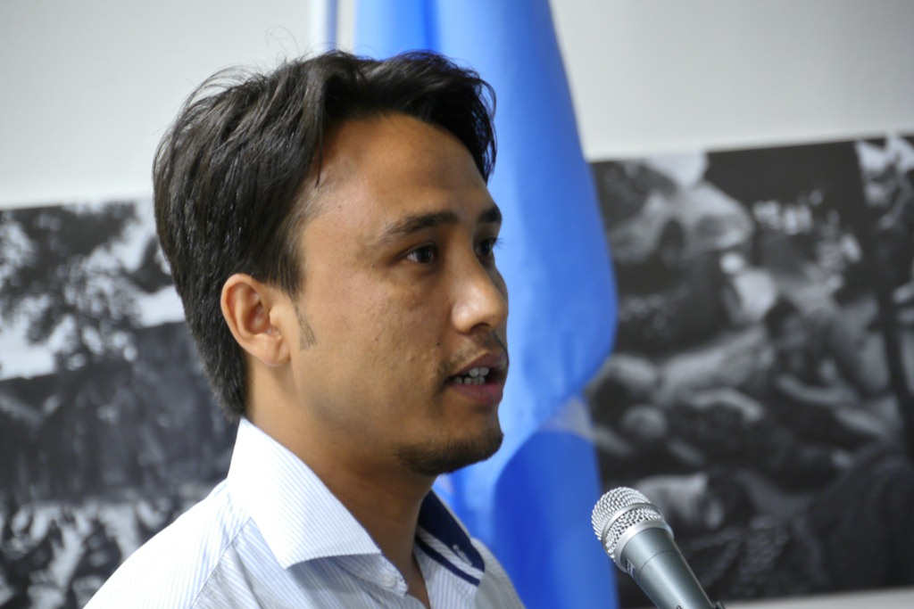私の話はインドから始まります。
2010年3月、私の通っていたインドの大学でセミナーが開かれ、私を含む外国人がインドでの生活体験を共有する機会がありました。その中で、アメリカから来た大学教授が興味深い事柄を話してくれました。それは、私たちの先入観にとらわれた偏見についてでした。彼女はインドの路上を歩いているとき、「＄印」、つまり「お金を持った外国人のカモ」として見られてしまうと言うのです。しかし、アフガニスタン人である私がインドの路上で歩いていると「テロ印」、つまりテロリストとして見られてしまうという惨めな事実については、彼女は知る由もありません。これこそが他の誰よりも私が経験し、直面している偏見なのです。
私の名前はエサヌラ・ハサニ、かつて祖国アフガニスタンを離れ、祖国に帰還した者です。そんな私の話は1990年代まで遡ります。当時、私の家族はアフガニスタンに住み続ければ命の危険にさらされ、また将来も奪われると考えたため、父が隣国パキスタンへの移住を決意しました。私たち兄弟姉妹の教育を受ける機会を確保することが最も重要な移住の理由でした。
2007年、私は高等教育を受けるために母国に戻りました。2009年、コンピューター・サイエンスを勉強するためにインドへ渡り、学部課程を卒業したのち、2012年に再びアフガニスタンへと帰国しました。それ以来、アフガニスタンの農村復興・開発省で働いていましたが、昨年、研究を続けるために来日し、新たな生活が始まったというわけです。
本日は、私たちが母国で直面している課題にも言及しながら、アフガニスタンという国やそこで暮らす人々について、皆様に少し違った視点を提供できればと思っています。そして、私自身の研究についても簡潔にお話致します。
 かつてシルクロードが通っていた内陸国・アフガニスタンの戦略的重要性は、古代から現代に至るまで、アレクサンドロス大王の東方遠征、イスラーム帝国、モンゴル帝国、大英帝国など幾多の帝国を惹きつけてやみませんでした。このように文明の十字路であるアフガニスタンには、バーミャン遺跡やジャームのミナレット（尖塔）など“文明の足跡”としての歴史遺産やバンデ・アミール国立公園など風光明媚な自然遺産があります。
かつてシルクロードが通っていた内陸国・アフガニスタンの戦略的重要性は、古代から現代に至るまで、アレクサンドロス大王の東方遠征、イスラーム帝国、モンゴル帝国、大英帝国など幾多の帝国を惹きつけてやみませんでした。このように文明の十字路であるアフガニスタンには、バーミャン遺跡やジャームのミナレット（尖塔）など“文明の足跡”としての歴史遺産やバンデ・アミール国立公園など風光明媚な自然遺産があります。
様々な文明の故郷となったアフガニスタンでは、多民族文化が形成されました。今日のアフガニスタン人は、パシュトーン人、タジク人、ハザラ人、ウズベク人、トルクメン人、バローチ人など、多数の民族によって構成されており、私自身はハザラ人です。私たちアフガニスタン人は、その歴史、お客様をおもてなしする心、宗教、独立性を誇りとしています。また、私たちは詩歌を心から愛しています。多くのアフガニスタン人にとって、木曜日の晩は「歌の夕べ」として知られており、男女や子どもたちが集って古の歌や現代の歌を鑑賞します。
 しかしながら、かつて文明が繁栄したこの国は、30年もの長きにわたって戦争に苦しんでいます。アフガニスタンの現代史は度重なる壊滅的な戦争に翻弄されることとなり、都市インフラ、公共施設、経済、教育、そして歴史的遺産までもが壊されてしまったのです。
しかしながら、かつて文明が繁栄したこの国は、30年もの長きにわたって戦争に苦しんでいます。アフガニスタンの現代史は度重なる壊滅的な戦争に翻弄されることとなり、都市インフラ、公共施設、経済、教育、そして歴史的遺産までもが壊されてしまったのです。
現在、私たちアフガニスタン人は国際社会の支援を受けながら、国の再建に取り組んでいる最中です。アフガニスタンの開発と経済復興の主な原動力となっているのが、まさに私のように戦争中に祖国から離れることを余儀なくされ、そして帰還した数多くの元難民なのです。
日本はアフガニスタンの開発に対して多大なる貢献をしています。この場をお借りして日本の皆さんに心より御礼を申し上げます。日本政府はJICAを通じてインフラ整備、健康、教育、キャパシティ・ビルディングなど各分野において、これまで積極的に寄与してきました。
現在、私は神戸情報大学院大学のICT for Development（社会課題解決のためのICT）修士課程で、スマート・カード（注：ICカード）の技術について研究しています。スマート・カードを公共交通機関へ活用することによって、交通機関の効率性を改善し、カブール市や個人などのバス運営者（注：カブールでは大部分のバスは個人によって運営されている）の増収につながると考えているからです。
アフガニスタンの首都・カブールは約440万人の人口を擁する人口密集地帯です。カブールの都市交通インフラは、戦争中に略奪されたり、破壊されたりしたため、カブールと同程度の人口密度である東京の交通インフラとは比べようもありません。
 それゆえ、カブール市民は毎日のように交通渋滞に巻き込まれています。バスの台数が限られているので、人々は混雑したバスを長時間も待たなければなりません。残念ながら現時点では、アフガニスタン政府にとって、巨額の投資を必要とする（地下鉄の敷設等）大規模な交通インフラの改善はほぼ不可能です。ただ、解決策の一つとして、既存のリソースを効率的に使って公共交通機関を運営すれば、市民によりよいサービスを提供出来るでしょう。このような背景のもと、私は電子マネーで運賃を集金する方法を導入することによって、交通システムの効率性を高め、バス運営者の利益を増加させるための研究に取り組んでいるのです。
それゆえ、カブール市民は毎日のように交通渋滞に巻き込まれています。バスの台数が限られているので、人々は混雑したバスを長時間も待たなければなりません。残念ながら現時点では、アフガニスタン政府にとって、巨額の投資を必要とする（地下鉄の敷設等）大規模な交通インフラの改善はほぼ不可能です。ただ、解決策の一つとして、既存のリソースを効率的に使って公共交通機関を運営すれば、市民によりよいサービスを提供出来るでしょう。このような背景のもと、私は電子マネーで運賃を集金する方法を導入することによって、交通システムの効率性を高め、バス運営者の利益を増加させるための研究に取り組んでいるのです。
私の研究は独立系企業によって実用化される予定です。カブール市民は、どの店でもスマート・カードを購入し、チャージすることができるでしょう。また、これらのスマート・カードは公共交通機関のバス運営者に認可される見込みです。一方、バス運営者はどの代理店でも電子マネーを現金と交換できるようになるでしょう。さらに、乗り物への乗車時の取引や代理店での商取引は、乗り物をより効率的に計画・運営するために必要となる情報を提供してくれます。私は、祖国アフガニスタンとそこに暮らす人々へ全てを捧げる者として、アフガニスタン社会の抱える課題を解決したいのです。
いつの日か、アフガニスタン、イラク、シリア、パレスチナ、あるいはその他の国から来た人が、冒頭でお話ししたテロリストや金持ち外国人のカモの話のように、偏見に満ちた目で見られない日が来るように願っています。
アフガニスタンに世界各国から休暇を過ごすために人々がやってきて、美しい渓谷を散策し、美味しいアフガニスタン料理に舌つづみを打つ光景を想像すると、私の瞳は嬉し涙でいっぱいになるでしょう。このような光景が実現することを切に祈っています。
ご静聴ありがとうございました。
日本社会はイスラムの理想 ガラナイ・モハメド・ハニフさん（留学生）
Q.どうして日本で勉強しようと思いましたか？
A.来日前から、アフガニスタンでの日本の国際協力分野での貢献を知っていましたし、日本は戦後に経済復興を成し遂げた国なので、以前から関心を持っていました。
Q.日本での生活の感想や日本社会についてのご意見をお聞かせてください。
A.日本人の礼儀正しさや、日本社会が信頼と平和な文化で成り立っている点が気に入りました。日本社会は「イスラームの理想に近い社会」だと思います。また国際都市・神戸にはモスク*もあり、その近辺でイスラム食のハラルフードも入手できるので便利ですね。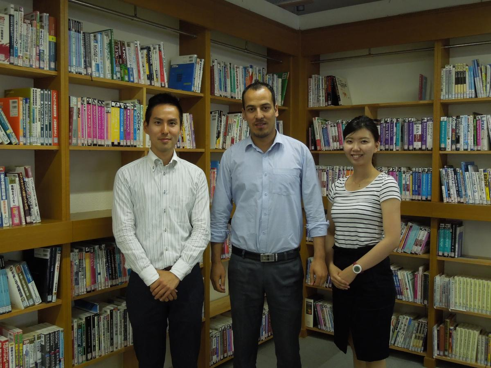
Q.日本が「イスラームの理想に近い」というのは、具体的にはどういう意味ですか？
A. イスラーム世界では「アッ・サラーム・アライクム（あなたの上に平安がありますように）」と挨拶をするように、イスラームの教えでは、平安な社会の実現のために、例えば他人の物を盗まないことや、他者に礼儀正しく接することが重要だとされています。日本では物を落としても持ち主のもとに戻ってくることが多く、日本人の礼儀正しさと他者への信頼によって社会の安定が維持されているので、私にとって日本社会はイスラームの理想を体現しているかのように見えるのです。
Q.講師として教育に携わっていた時、何か困難なことはありましたか？
A. 英語の教材を用いて、公用語であるダリー語とパシュトー語で講義をするのですが、どのようにすれば自分のスキルや経験がちゃんと生徒たちに伝えることができるのか、という点が難しく感じました。また教材が足りないので困りました。
Q.アフガニスタンにおける教育の課題は、他にどのようなものがありますか？
A.未就学児童の問題や、パキスタンやタジキスタンなど隣国と接する辺境地域での女性の就学率の低さといった問題が挙げられます。女性が教育を受ける機会が限られている理由としては、家庭の貧困や辺境地域での紛争、若年婚、教育の重要性があまり認識されていないといった点が挙げられます。教育を受けていない人たちは、人権とは何か、平和とは何かを理解していないため、教育を受けることが権利だと気づいていないのです。しかし、教育を受けることにより“人権”や“平和”の概念をアフガニスタンの人々が共有し、人権を保護することが可能となると思います。
Q.学位を取得した後、アフガニスタンでどんなことをしたいですか？
A.大学に戻って講師を続けるつもりです。日本で得られたスキルや経験を母国の若い世代に伝えて、国の発展に貢献したいです。実は以前、国際会議のために「ソーシャルメディアを活用してどのように平和を創出するか」というテーマで寄稿したことがあります。例えば日本で学んだコンピューター技術でアプリケーションを開発し、平和や人権といった概念を共有することによって、平和構築に寄与できるのではないかと考えています。“Electronic Salah” (直訳するとElectronic Peace)が、――これは私の造語なのですが――、コンピューター技術によって平和な社会を目指すという意味であり、実際に母国で達成できるようにしたいです。
インタビューにご協力下さり、ありがとうございました！
（聞き手：OCHA神戸事務所インターン 見津田、片桐。インタビューは2015年7月に実施しました）
*神戸ムスリムモスクは1935年に建設された日本で最初のモスクで、異国情緒溢れる神戸市北野地区にあります。イスラーム教徒でなくても内部見学が出来ますので、神戸観光の際に見学してみてはいかがでしょうか？
日本という平和な国を大切にして エクバリ・サイード・ジアさん（留学生）
Q.日本で勉強しようと思った理由は？
A. 日本の戦後の経済復興を歴史の授業で習ったこと、来日前から日本は技術大国だというイメージを抱いていたことが関係しています。また、私はサッカーをするのが好きなのですが、サッカーAFCアジアカップで、2000年と2004年に日本が優勝したので、中田英寿選手や川口能活選手など日本人選手を知っており、親近感を持っていました。
Q.日本でもサッカーをしているのですか？
A.はい、神戸の多国籍チームで週末にサッカーを楽しんでいます。
Q.留学生活で、特に印象に残っていることはありますか？
A. 研修旅行で東日本大震災の被災地を訪問したことです。仙台や石巻では、被災者の方から悲しいお話や教訓になる話もたくさん伺いました。また、人々が助け合い、とりわけ若い人たちがボランティアでお年寄りを助けていたことが印象的でしたね。この旅行では、日本の伝統的な旅館に初めて宿泊し、畳の上で過ごしたことも興味深く、畳の文化がとても気に入りました。
Q.日本での生活について、印象はどうですか？
A.日本はアフガニスタンに対して多大な支援をしてくれたので感謝しています。日本人はとても礼儀正しく、仕事に対してプロフェッショナルで、安定を好み、他人の物を決して盗まない正直な人たちだと思います。一方で、少し恥ずかしがり屋かもしれないですね。例えば、パーティで日本人の友人を初対面となる第三者に紹介すると、日本人は多少困惑するようです。アフガニスタンには“Mehmaan Dusti”（客人に対する心遣いの意）の文化があり、お客様やその空間にいる人全てを大切にして“おもてなし”する文化が根付いているので、アフガニスタン人は初対面の人とも積極的にコミュニケーションをとろうとします。アフガニスタン人と比べると、日本人は個人を大切にしているように、私の目には映ります。両者を足して２で割ったらベストかもしれないですね（笑）
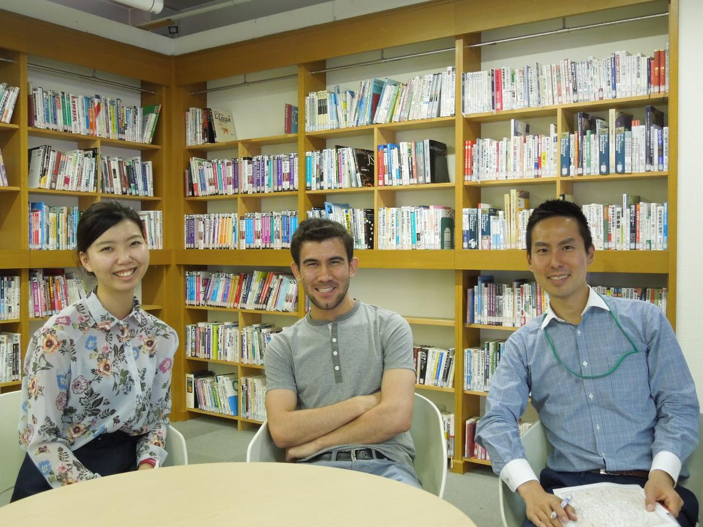Q.学位取得後、アフガニスタンに帰国して何をするご予定ですか？
A.大学に戻って、講師を続けます。そして私生活では婚約者と結婚するつもりです。
（ここでジアさんが婚約者の写真を私たちインタビュアーに見せてくれたので）
Q.とても美人ですね！ お二人は、どうやって知り合ったのですか？
A. （照れながら）はは、ありがとう。彼女は医学を勉強中の学生で、親戚の紹介を通じて知り合いました。
Q.アフガニスタンでは、やはり未婚の男女が公共の場でデートするのは難しいですか？
A.ええ、公園など外でデートすると注目を集めてしまうので、主に屋内で会っていました。日本は自由にデートできるので羨ましいです（笑）
Q.大学は男女が出会うには最適な場所だと思いますが、大学での男女比はどうでしたか？
A. 一般的に大学のクラスでは男女比は8：2か7：3くらいですが、私がいたクラスは66人中24人、実に3分の1以上が女性だったんですよ。コンピューターは女性にも人気です。アフガニスタンでは、コンピューター関係の仕事以外だと、医者やエンジニアが人気の職業です。
Q. アフガニスタンにおける教育の課題はどのようなものがありますか？
A. 実は私の母は読み書きが出来ないので、日常生活に苦労していました。現在、母はマドラサというイスラームの教育機関でコーランの暗誦を通じてアラビア文字が読めるようになってきましたが、母のような非識字者は未だにアフガニスタンには多数います。幸い、私自身や兄弟姉妹は高等教育を受ける機会に恵まれましたが、このような環境になかった場合、とくに女性の識字率は低いのが現状です。ITは教育を全土に普及させるためのツールなので、ITを活用して教育に貢献したいですね。
Q.ジアさんはバーミャン（Bamyan）州にも住んだことがあるとそうですね。タリバンに爆破されたバーミャン大仏にも行ったことがありますか？
A.はい、破壊される前と爆破後に行ったことがあります。とても壮大な場所で、中に入って近くで壁画などを見ました。破壊された後に再訪したときは、残念な気持ちになりましたね･･･。
Q. タリバン統治下の生活はどうでしたか？
A. 良い経験ではなかったです。1996年にカブールが制圧され、中央政権が崩壊した後、故郷のバグラン州も紛争に巻き込まれていきました。軍人の兄がバーミャン州でのタリバンとの戦闘に派兵されたこともあります。
Q.最後に、日本の人たちへのメッセージはありますか？
A.紛争によって国土が混迷を極めたからこそ、日本のように平和な国の素晴らしさが分かります。日本人の皆さんはそのことが当たり前すぎて気づいていないかもしれませんが、日本という“平和な国”を祖国として愛してください。アフガニスタンには、残念ながら紛争やテロリストといったネガティブな印象が付きまとっているかもしれませんが、こういった偏見は時間が解決してくれることを願っています。
インタビューにご協力下さり、ありがとうございました！
（聞き手：OCHA神戸事務所インターン 見津田、片桐。インタビューは2015年7月に実施しました）